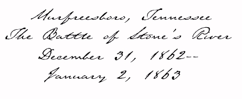
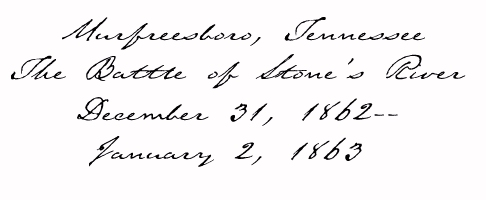
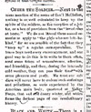
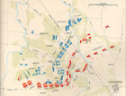

"Cheer the Soldier" Valley
Spirit, January 21, 1863

Casualties from Battle of
Murfreesboro (Stone's River)
Valley Spirit, January 28,
1863
"Col. Housum's funeral" Valley
Spirit, January 28, 1863



from the Civil War Battle Atlas
Physical Description from Sgt. John Obreiter's
History of the Regiment